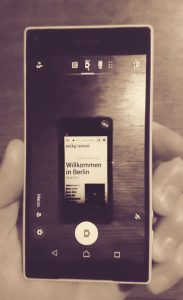
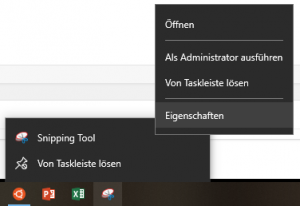
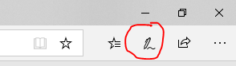

Drölf erstaunlich einfache Wege wirklich beeindruckende Screenshots zu erstellen
[caption id=“attachment_2364” align=“alignright” width=“183”] 
{kind=link}
Eine Studie hat ergeben, dass 99 von 100 Bildschirmaufnahmen (neudeutsch Screenshots) mit dem Handy aufgenommen werden. Warum ist das falsch? Nun:
- Weil die Qualität der Aufnahmen mit dem Smartphone oft ziemlich schlecht ist,
- der staubige Bildschirm zusätzlich vom Wesentlichen ablenkt sowie
- Licht-Reflexionen oder Moiré-Effekte wichtige Inhalte verdecken.
- Außerdem muss man den Screenshot, wenn man ihn in einem Forum oder einer Social Media Gruppe präsentieren will, unter Umständen erst noch umständlich mit dem Smartphone speichern, ausschneiden, bearbeiten und irgendwo hochladen.
- Auf einem Smartphone-Foto ist nicht sofort ersichtlich, um welche Teile des Bildschirms es denn nun geht.
Konfuzius, ein berühmter buddhistischer Priester und begeisterter Internetnutzer, hat es mal so zusammengefasst:
Wer Screenshots im 21. Jahrhundert mit dem Handy im Hochformat aufnimmt, hat die Kontrolle über sein Leben verloren.
Dabei sind die technischen Möglichkeiten zur Aufnahme von Screenshots mittlerweile so viel mehr bequemer als noch zu Zeiten von Netscape und Microsoft DOS. Hier stelle ich die besten und vor allem einfachsten vor!
Screenshots in Mac OS X aufnehmen
Das Betriebssystem von Apple bietet schon eine ganze Weile eine Reihe von Shortcuts an, mit denen sich Bildschirminhalte als Bilddatei aufnehmen lassen:
- Will man den gesamten Bildschirm aufnehmen und direkt als Datei speichern, drückt man die folgenden Tasten gleichzeitig: Umschalttaste-Befehlstaste(⌘)-3.
- Soll nur ein bestimmter Bereich aufgenommen werden, lautet der Shortcut Umschalttaste-Befehlstaste(⌘)-4 - der Mauscursor wird zu einem Fadenkreuz um damit den gewünschten Bereich zu markieren
- Zur Aufnahme eines Fensters drückt man ebenso Umschalttaste-Befehlstaste(⌘)-4 und danach die Leertaste. Nun lässt sich das Fenster per Mausklick auswählen.
- Möchte man die Aufnahme nicht als Datei speichern, sondern in direkt in die Zwischenablage kopieren, drückt man zu den oben genannten Tastenkombinationen zusätzlich die CTRL-Taste
Die komplette Dokumentation dazu befindet sich hier: https://support.apple.com/de-de/ht201361
Mit der neuen Version MacOS führt Apple ein verbessertes Tool für Screenshots ein (Umschalttaste-Befehlstaste(⌘)-4). Nun gibt es einen Timer (5 oder 10 Sekunden) und eine kleine Oberfläche um den Bildschirmaufnahme bequemer zu konfigurieren.
Screenshots in Windows 10 aufnehmen
Windows von Hause aus eine noch größere Vielzahl von Möglichkeiten an, bequem Screenshots zu erstellen:
-
Das Snipping Tool zur Aufnahme und Bearbeitung von Screenshots ist schon seit Windows 7 Bestandteil des Betriebssystems. Es unterstützt die Aufnahme von beliebigen Bereich, dem ganzen Bildschirm oder sogar komplexer Formen. Außerdem lässt sich eine Verzögerung einstellen, um z.B. Hover-Effekte zu dokumentieren. Außerdem lassen sich bereich mit Farben einfach markieren. Wenn man das Snipping-Tool in der Taskleiste abgelegt hat, kann man über das Kontextmenü zu den Eigenschaften. Dort kann man eine Tastenkombination festlegen, um das Tool jederzeit schnell aufrufen zu können.
[caption id=“attachment_1790” align=“aligncenter” width=“300”]

Eigenschaften für das Snipping-Tool öffnen[/caption] -
Den gesamten Bildschirm kann man auf einer Windows-Tastatur mit der Druck- bzw. PrtScr-Taste direkt in die Zwischenablage kopieren. Drückt man die Druck-Taste und Windows-Taste gleichzeitig, wird der Screenshot im Ordner Bilder - Screenshot als Datei abgelegt.
-
Nutzt man mehrere Monitore und will nur den gerade aktiven Bildschirm in die Zwischenablage packen, funktioniert das mit Alt+Druck-Taste.
-
Seit Windows 10 gibt es außerdem das Ink-Tool, das sich mit Windows-Taste+W aufrufen lässt und eine ganze Palette von zusätzlichen Funktionen mitbringt.
[caption id=“attachment_1784” align=“aligncenter” width=“189”] Screenshot in Windows mit Ink erstellen[/caption]
-
Noch etwas komfortabler als das Snipping-Tool, aber kein Standard-Bestandteil von Windows, ist Snip.
{kind=link}
{kind=link}
Screenshot im Browser direkt aufnehmen
Auch die Browser-Hersteller haben erkannt, dass Screenshots wohl ein essentieller Bestandteil des Internets sind. So bieten die gängigsten Browser mittlerweile Funktionen zur Aufnahme des Bildschirms an.
-
In Firefox befindet sich die Funktion direkt im Kontext-Menü jeder Website. Damit lassen sich bestimmte Elemente der Seite, freie Bereich oder die ganze Seite als Screenshot in die Zwischenablage kopieren, als Datei speichern oder sogar in einer Firefox-Cloud ablegen um sie online unter https://screenshots.firefox.com/shots verfügbar zu machen!
[caption id=“attachment_1789” align=“aligncenter” width=“300”] Screenshot in Firefox anfertigen[/caption]
-
In Chrome ist die Screenshot-Funktion leider etwas versteckt und nicht sehr komfortabel. Am schnellsten erreicht man diese über die Kommandofunktion. Zunächst muss man die Entwicklerkonsole öffnen indem man z.B. die Taste F12 oder Control+Shift+I drückt (Mac: Command+Option+I). Dann gelangt man mit Strg+Shift+P zur Auswahl der Chrome-Kommandos wo man nach der Screenshot-Funktion suchen kann. Der lange Weg führt übrigens über die Geräte-Toolbar, mit der Chrome verschiedene Geräteklassen simulieren kann (Ctrl+Shift+M). Dort muss erst oben die gewünschte Auflösung bzw. das Gerät auswählen. Über das kleine Menü in der rechten oberen Ecke gelangt man dann schließlich zur Screenshot-Funktion.[gallery ids=“1788,1787,1786”]
-
Der neue Microsoft Browser Edge ist hier wieder etwas komfortabler. Die Funktion befindet sich hinter dem Button “Notizen einfügen” (Pen & Stencil) rechts neben der Adressleiste. Das Tool bietet sehr viele Funktionen, um den Screenshot aufzunehmen und mit Notizen zu versehen.
[caption id=“attachment_1785” align=“aligncenter” width=“294”]

Screenshot anfertigen in Microsoft Edge[/caption]
{kind=link}
{kind=link}
Screenshot mit dem Smartphone aufnehmen
Du kannst natürlich nicht immer einen ausgewachsenen Computer zur Hand haben und manchmal will man tatsächlich etwas dokumentieren, was einem auf dem kleinen Smartphone-Bildschirm widerfahren ist. Bevor du dir dazu ein weiteres Smartphone nimmst um ein Foto von deinem Smartphone-Display zu machen: Zumindest Android hat seit geraumer Zeit eine Screenshot-Funktion eingebaut: Wenn du den An-/Aus-Button etwas länger drückst, erscheint ein Menü, in dem du die Wahl zwischen Screenshot und sogar einer Bewegtbild-Aufnahme des Bildschirms hast.
Zusammenfassung
Mit den hier beschriebenen Methoden landet der hochwertige Screenshot mit geringem Aufwand direkt in der Zwischenablage des Computers (oder als Datei in einem Ordner). Die meisten modernen Plattformen wie Facebook oder Twitter erlauben außerdem mittlerweile das direkte Einfügen von Bildern - also auch Screenshots - aus der Zwischenablage in den Beitrag oder Tweet (z.B. unter Windows mit CTRL+V). Man kann also innerhalb weniger Sekunden und mit wenigen Handgriffen einen ansehnlichen Screenshot erstellen, gegebenenfalls fragliche Bereich farblich hervorheben und dann in einen Beitrag auf Facebook kopieren.
Also, pack dein Smartphone weg oder nutze es für die wirklich wichtigen Dinge und überlasse die richtig guten Screenshots deinem Computer.